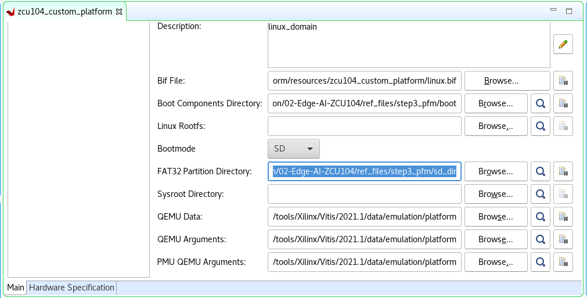
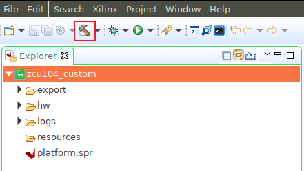
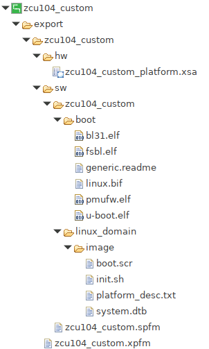

Step 3: Create the Vitis Platform¶
Prepare Files for Platform Packaging¶
We would store all the necessary files for Vitis platform creation flow. Here we name it
zcu104_custom_pkg. Then we create apfmfolder inside to hold platform creation source components.mkdir zcu104_custom_pkg cd zcu104_custom_pkg mkdir pfm
After this step, your directory hierarchy looks like this.
- zcu104_custom_platform # Vivado Project Directory - zcu104_custom_plnx # PetaLinux Project Directory - zcu104_custom_pkg # Platform Packaging Directory - pfm # Platform Packaging Sources
Install sysroot:
Go to
/images/linux directory. Type
./sdk.sh -d <Install Target Dir>to install PetaLinux SDK. use the-doption to provide a full pathname to the output directory zcu104_custom_pkg (This is an example ) and confirm.Note: The environment variable LD_LIBRARY_PATH must not be set when running this command
We would install Vitis AI library into this rootfs during test phase.
Create
bootdirectory andsd_dirdirectory inside pfm directorycd zcu104_custom_pkg/pfm mkdir boot mkdir sd_dirAfter this step, your directory hierarchy looks like this.
- zcu104_custom_platform # Vivado Project Directory - zcu104_custom_plnx # PetaLinux Project Directory - zcu104_custom_pkg # Platform Packaging Directory - sysroots # Extracted Sysroot Directory - pfm # Platform Packaging Sources - boot # Platform boot components - sd_dir # Files to be put in FAT32 partition of SD card
When creating the Vitis platform, we will give boot directory for boot components and sd_dir for FAT32 partition contents in SD card.
Prepare for the boot components
Copy the generated Linux software boot components from <your_petalinux_dir>/images/linux directory to the <full_pathname_to_zcu104_custom_pkg>/pfm/boot directory to prepare for running the Vitis platform packaging flow:
zynqmp_fsbl.elf
pmufw.elf
bl31.elf
u-boot-dtb.elf: rename to u-boot.elf
system.dtb
Note: These files are the sources of creating BOOT.BIN, and will be used during emulation.
Note: The u-boot.elf generated by PetaLinux removed the device tree info from the elf from 2021.1. U-boot-dtb.elf is generated for compatible usages. To use the Vitis 2021.1 auto-generated BIF and
qemu_args.txtfiles, that were created to simplify the platform creation process, we can rename u-boot-dtb.elf to u-boot.elf in boot directory. Thus u-boot can work properly in both hardware and emulation. In next release, Vitis auto-generated qemu_args.txt will update to use the u-boot.elf without dtb and the standalone system.dtb file for emulation.Prepare sd_dir directory. Contents in this directory will be packaged to FAT32 partition by v++ package tool.
Copy the generated Linux software components from <your_petalinux_dir>/images/linux directory to the <full_pathname_to_zcu104_custom_pkg>/pfm/sd_dir directory.
boot.scr: script for u-boot initialization.
system.dtb: the device tree blob that Linux reads during boot to understand system setup.
Create a Vitis Platform¶
We can create a Vitis platform with Vitis IDE or with XSCT command line. Vitis IDE can create the platform if your design only contains one XSA. If your design has to XSA (hw and hw-emu), please use XSCT to create the platform.
Click here to expand the detailed steps using Vitis IDE to create a Vitis platform
First we create a Vitis platform project with the XSA file generated by Vivado from Step 1.Launch Vitis IDE
Go to the zcu104_custom_pkg folder you created:
cd <full_pathname_to_zcu104_custom_pkg>
Launch Vitis by typing
vitis &in the console.Select zcu104_custom_pkg folder as workspace directory.
Create a new platform project
Select menu File > New > Platform Project to create a platform project.
Enter the project name. For this example, type
zcu104_custom. Click Next.In the Platform page,
Click Browse button, select the XSA file generated by the Vivado. In this case, it is
zcu104_custom_platform.xsa.Set the operating system to linux.
Set the processor to psu_cortexa53.
Architecture: 64-bit
Uncheck option Generate boot components, because we’ll use PetaLinux generated boot components.
Click Finish.
Setup software settings in Platform Settings view.
Click the linux on psu_cortexa53 domain, browse to the locations and select the directory or file needed to complete the dialog box for the following:
Bif file: Click the drop down icon and select Generate BIF.
Note: The file names in
<>are placeholders. Vitis will replace the placeholders with the relative path to platform during platform packaging. V++ packager, which runs when building the final application would expand it further to the full path during image packaging. Filename placeholders point to the files in boot components directory. The filenames in boot directory need to match with placeholders in BIF file.<bitstream>is a reserved keyword. V++ packager will replace it with the final system bit file.Boot Components Directory: Browse to zcu104_custom_pkg/pfm/boot and click OK.
FAT32 Partition Directory: Browse to zcu104_custom_pkg/pfm/sd_dir and click OK.

Note: Starting from 2020.2, Vitis will setup default QEMU arguments to enable Vitis platform emulation. If there are additional QEMU settings, please write your own qemu_args.txt and set the file name in QEMU Arguments field.
Click zcu104_custom project in the Vitis Explorer view, click the Build button to generate the platform.

Note: The generated platform is placed in the export directory. BSP and source files are also provided for re-building the FSBL and PMU if desired and are associated with the platform. The platform is ready to be used for application development.

If you’d create an Vitis application in the same workspace as this platform, you can find this platform available in the platform selection page in platform creation wizard. If you’d like to reuse this platform in another workspace, add its path to PLATFORM_REPO_PATHS environment variable before launching Vitis GUI, or use “Add” button in platform selection page of Vitis GUI to add its path.
Click here to expand the detailed steps using XSCT to create a Vitis platform
Create a tcl file with XSCT commands. For example, here is the main parts of xsct_create_pfm.tcl
# Create a platform project
platform create -name zcu104_custom_platform \
-desc "A custom platform ZCU104 platform" \
-hw <Hardware>.xsa \
-hw_emu <Hardware_Emulation>.xsa \
-out <Output_Directory> \
-no-boot-bsp
# If you don't need to support hardware emulation, you can omit the option -hw_emu and its value.
# Add Linux domain
domain create -name xrt -proc psu_cortexa53 -os linux -arch {64-bit} -runtime {ocl} -sd-dir {./sd_dir} -bootmode {sd}
domain config -boot {./boot}
domain config -generate-bif
domain config -qemu-data ./boot
platform write
platform generate
Note: Please replace the file name and directory name in the script with your project file location.
Note: If you don’t need to support hardware emulation, you can omit the option
-hw_emuand its value for the commandplatform create.
The platform create command needs the following input values:
-name: Platform name-hw: Hardware XSA file location-hw_emu: Hardware emulation XSA file location-out: platform output path-sd-dir: the directory that contains the files to be included in the FAT32 partition of the SD card image.
The domain command will setup the Linux domain with SD boot mode. It will use files in ./sd_dir to form the FAT32 partition of the SD card image and files in ./boot directory to genreate boot.bin.
You can pass the values to the script directly by replacing the variable with the actual value, or define them in the header of the tcl script, or pass the value to XSCT when calling this script.
Here’s an example of calling XSCT if you hard code all contents in xsct_create_pfm.tcl.
xsct xsct_create_pfm.tcl
To support better generalization, the example Makefile and xsct_create_pfm.tcl in ref_files directory use variables to represent the file names and directory location. Please refer to them if you would like to get more programability in your scripts.
Fast Track¶
Scripts are provided to create the Vitis platform. To use these scripts, please run the following steps.
Run build
# cd to the step directory, e.g. cd step3_pfm make all
To clean the generated files, please run
make clean
Next Step¶
Next let’s try to build some applications on this platform and test them.
Copyright© 2021 Xilinx